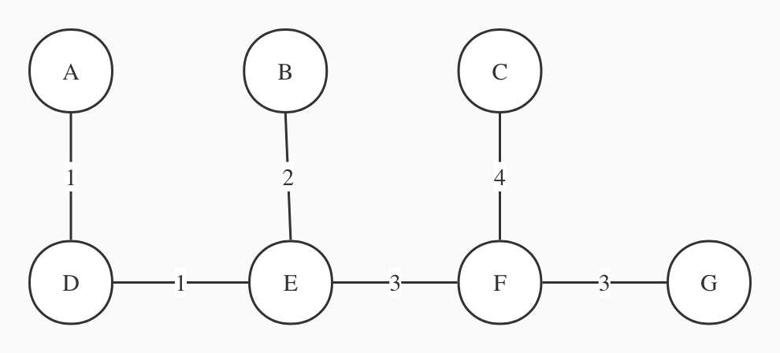
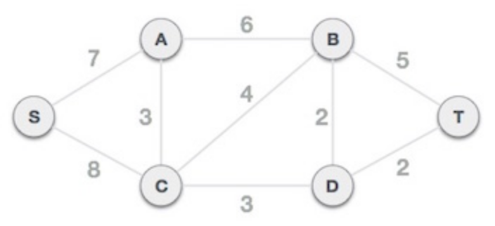
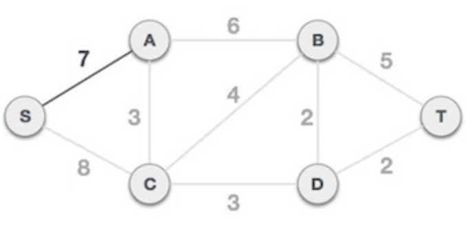
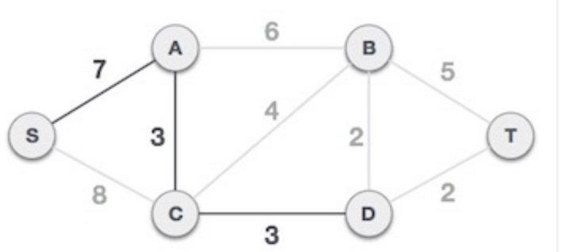
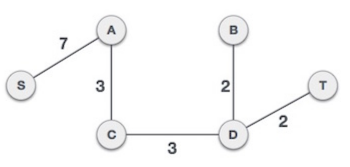

greedy algorithem
Technique definition
A greedy algorithm (also known as a greedy algorithm) means that when solving a problem, it always makes the best choice at the moment. That is to say, without considering the overall optimality, the algorithm obtains a local optimal solution in a sense.
Greedy algorithms are particularly effective in problems with optimal substructure. The optimal substructure means that the local optimal solution can determine the global optimal solution. Simply put, the problem can be solved by decomposing it into sub-problems, and the optimal solutions of the sub-problems can be recursive to the optimal solution of the final problem.
Minimum spanning trees
A minimum spanning tree (MST) or minimum weight spanning tree is a subset of the edges of a connected edge-weighted undirected graph that connects all vertices together without any cycles and with the smallest possible total edge weight. [1] That is, it is a spanning tree whose sum of edge weights is as small as possible. [2] More generally, any edge-weighted undirected graph (not necessarily connected) has a minimum spanning forest, which is the union of the minimum spanning trees of its connected components.
Why optimal set of edges cannot contain a cycle?
because removing an edge from this cycle would reduce the cost without compromising connectivity:
A minimum spanning tree has (V – 1) edges, V is number of vertices
definition
Greedy algorithms build up a solution piece by piece, always choosing the next piece that offers the most obvious and immediate benefit.
Application of Minimum Spanning Tree:
- a) To lay optical cables between n cities, the main goal is to enable communication between any two of these n cities, but the cost of laying optical cables is very high, and the cost of laying optical cables between cities is different, so another One goal is to minimize the overall cost of laying fiber optic cables. This requires finding the weighted minimum spanning tree.
- b) There are 8 villages distributed in various regions. The government intends to use the least funds to connect these 8 villages, so that no matter which village is in, you can go to the other 7 villages. It is known that two or two villages can be reached. Villages that can communicate with each other and the money it takes to build the sections between them
exercise
Consider the following graph.

(a) What is the cost of its minimum spanning tree?
(b) How many minimum spanning trees does it have?
solution
(a) The minimum spanning tree is the following picture

the minimal cost is 14.
I ran prim's Algorithm on the graph
step 1 --------------
current node is A ,edge is A to B
cost[ B ]= 100000
edge[ A ][ B ] is 4
apparently cost[ B ] > edge[ A ][ B ]
*** update cost and previous ****
current cost is {'A': 0, 'B': 4, 'C': 100000, 'D': 100000, 'E': 100000, 'F': 100000, 'G': 100000}
current prev is {'A': None, 'B': 'A', 'C': None, 'D': None, 'E': None, 'F': None, 'G': None}
step 2 --------------
current node is A ,edge is A to D
cost[ D ]= 100000
edge[ A ][ D ] is 1
apparently cost[ D ] > edge[ A ][ D ]
*** update cost and previous ****
current cost is {'A': 0, 'B': 4, 'C': 100000, 'D': 1, 'E': 100000, 'F': 100000, 'G': 100000}
current prev is {'A': None, 'B': 'A', 'C': None, 'D': 'A', 'E': None, 'F': None, 'G': None}
step 3 --------------
current node is D ,edge is D to A
cost[ A ] is 0
edge[ D ][ A ] is 1
apparently cost[ A ] < edge[ D ][ A ]
no update continue
step 4 --------------
current node is D ,edge is D to B
cost[ B ]= 4
edge[ D ][ B ] is 3
apparently cost[ B ] > edge[ D ][ B ]
*** update cost and previous ****
current cost is {'A': 0, 'B': 3, 'C': 100000, 'D': 1, 'E': 100000, 'F': 100000, 'G': 100000}
current prev is {'A': None, 'B': 'D', 'C': None, 'D': 'A', 'E': None, 'F': None, 'G': None}
step 5 --------------
current node is D ,edge is D to E
cost[ E ]= 100000
edge[ D ][ E ] is 1
apparently cost[ E ] > edge[ D ][ E ]
*** update cost and previous ****
current cost is {'A': 0, 'B': 3, 'C': 100000, 'D': 1, 'E': 1, 'F': 100000, 'G': 100000}
current prev is {'A': None, 'B': 'D', 'C': None, 'D': 'A', 'E': 'D', 'F': None, 'G': None}
step 6 --------------
current node is E ,edge is E to B
cost[ B ]= 3
edge[ E ][ B ] is 2
apparently cost[ B ] > edge[ E ][ B ]
*** update cost and previous ****
current cost is {'A': 0, 'B': 2, 'C': 100000, 'D': 1, 'E': 1, 'F': 100000, 'G': 100000}
current prev is {'A': None, 'B': 'E', 'C': None, 'D': 'A', 'E': 'D', 'F': None, 'G': None}
step 7 --------------
current node is E ,edge is E to C
cost[ C ]= 100000
edge[ E ][ C ] is 6
apparently cost[ C ] > edge[ E ][ C ]
*** update cost and previous ****
current cost is {'A': 0, 'B': 2, 'C': 6, 'D': 1, 'E': 1, 'F': 100000, 'G': 100000}
current prev is {'A': None, 'B': 'E', 'C': 'E', 'D': 'A', 'E': 'D', 'F': None, 'G': None}
step 8 --------------
current node is E ,edge is E to D
cost[ D ] is 1
edge[ E ][ D ] is 1
apparently cost[ D ] < edge[ E ][ D ]
no update continue
step 9 --------------
current node is E ,edge is E to F
cost[ F ]= 100000
edge[ E ][ F ] is 3
apparently cost[ F ] > edge[ E ][ F ]
*** update cost and previous ****
current cost is {'A': 0, 'B': 2, 'C': 6, 'D': 1, 'E': 1, 'F': 3, 'G': 100000}
current prev is {'A': None, 'B': 'E', 'C': 'E', 'D': 'A', 'E': 'D', 'F': 'E', 'G': None}
step 10 --------------
current node is B ,edge is B to A
cost[ A ] is 0
edge[ B ][ A ] is 4
apparently cost[ A ] < edge[ B ][ A ]
no update continue
step 11 --------------
current node is B ,edge is B to C
cost[ C ]= 6
edge[ B ][ C ] is 5
apparently cost[ C ] > edge[ B ][ C ]
*** update cost and previous ****
current cost is {'A': 0, 'B': 2, 'C': 5, 'D': 1, 'E': 1, 'F': 3, 'G': 100000}
current prev is {'A': None, 'B': 'E', 'C': 'B', 'D': 'A', 'E': 'D', 'F': 'E', 'G': None}
step 12 --------------
current node is B ,edge is B to D
cost[ D ] is 1
edge[ B ][ D ] is 3
apparently cost[ D ] < edge[ B ][ D ]
no update continue
step 13 --------------
current node is B ,edge is B to E
cost[ E ] is 1
edge[ B ][ E ] is 2
apparently cost[ E ] < edge[ B ][ E ]
no update continue
step 14 --------------
current node is F ,edge is F to C
cost[ C ]= 5
edge[ F ][ C ] is 4
apparently cost[ C ] > edge[ F ][ C ]
*** update cost and previous ****
current cost is {'A': 0, 'B': 2, 'C': 4, 'D': 1, 'E': 1, 'F': 3, 'G': 100000}
current prev is {'A': None, 'B': 'E', 'C': 'F', 'D': 'A', 'E': 'D', 'F': 'E', 'G': None}
step 15 --------------
current node is F ,edge is F to E
cost[ E ] is 1
edge[ F ][ E ] is 3
apparently cost[ E ] < edge[ F ][ E ]
no update continue
step 16 --------------
current node is F ,edge is F to G
cost[ G ]= 100000
edge[ F ][ G ] is 3
apparently cost[ G ] > edge[ F ][ G ]
*** update cost and previous ****
current cost is {'A': 0, 'B': 2, 'C': 4, 'D': 1, 'E': 1, 'F': 3, 'G': 3}
current prev is {'A': None, 'B': 'E', 'C': 'F', 'D': 'A', 'E': 'D', 'F': 'E', 'G': 'F'}
step 17 --------------
current node is G ,edge is G to C
cost[ C ] is 4
edge[ G ][ C ] is 5
apparently cost[ C ] < edge[ G ][ C ]
no update continue
step 18 --------------
current node is G ,edge is G to F
cost[ F ] is 3
edge[ G ][ F ] is 3
apparently cost[ F ] < edge[ G ][ F ]
no update continue
step 19 --------------
current node is C ,edge is C to B
cost[ B ] is 2
edge[ C ][ B ] is 5
apparently cost[ B ] < edge[ C ][ B ]
no update continue
step 20 --------------
current node is C ,edge is C to E
cost[ E ] is 1
edge[ C ][ E ] is 6
apparently cost[ E ] < edge[ C ][ E ]
no update continue
step 21 --------------
current node is C ,edge is C to F
cost[ F ] is 3
edge[ C ][ F ] is 4
apparently cost[ F ] < edge[ C ][ F ]
no update continue
step 22 --------------
current node is C ,edge is C to G
cost[ G ] is 3
edge[ C ][ G ] is 5
apparently cost[ G ] < edge[ C ][ G ]
no update continue
You can see that in last update
cost is {'A': 0, 'B': 2, 'C': 4, 'D': 1, 'E': 1, 'F': 3, 'G': 3}
prev is {'A': None, 'B': 'E', 'C': 'F', 'D': 'A', 'E': 'D', 'F': 'E', 'G': 'F'}
If you added up the value in cost. You will get 14
(b) It only has one minimum spanning tree.
Prim’s & Kruskal’s Algorithm
Kruskal's algorithm
Steps:
1. Sort all the edges in non-decreasing order of their weight.
2. Pick the smallest edge. Check if it forms a cycle with the spanning tree formed so far. If cycle is not formed, include this edge. Else, discard it.
3. Repeat step#2 until there are (V-1) edges in the spanning tree.
Greedy algorithem implementation of Kruskal's algorithm
- Candidates - edges
- Selection - a subset S⊆ E of the candidate edges
- Solution check - does S touch every vertex, is it connected?
- Feasibility check - does adding e ∈ E create a cycle?
- Select function - edge weight
- Objective function - sum of weights
Following word is I cited from geeks for geeks. I think it is very useful.
Time Complexity: O(ElogE) or O(ElogV). Sorting of edges takes O(ELogE) time. After sorting, we iterate through all edges and apply the find-union algorithm. The find and union operations can take at most O(LogV) time. So overall complexity is O(ELogE + ELogV) time. The value of E can be at most O(V2), so O(LogV) is O(LogE) the same. Therefore, the overall time complexity is O(ElogE) or O(ElogV)
Prim's algorithm
Prim's algorithm for finding the minimum spanning tree (like Kruskal's algorithm) uses a greedy approach. Prim's algorithm shares similarities with the shortest path first algorithm.
Compared to Kruskal's algorithm, Prim's algorithm treats nodes as a single tree and continues to add new nodes to the spanning tree from the given graph.
- Step 1 - Select any node as root node
In this case, we choose the S node as the root node of the Prim spanning tree. This node is arbitrarily chosen, so any node can be the root node. One might wonder why any video can be a root node. So the answer is that in a spanning tree, all nodes of the graph are contained, and because it is connected, there must be at least one edge that connects it to the rest of the tree.

- Step 2 Check Outgoing Edges and Choose Less Costly Edges
On selecting the root node S, we see that S, A and S, C are two edges with weights 7 and 8, respectively. We choose edge S, A because it is smaller than the other side.

Now, the tree S-7-A is considered a node and we examine all edges coming out of it. We choose the one with the lowest cost and include it in the tree

After this step, the S-7-A-3-C tree is formed. Now we will treat it as a node again and will check all edges again. However, we will only choose the lowest cost advantage. In this case, C-3-D is the new edge, less than the cost of the other edges 8, 6, 4, etc.

After adding node D to the spanning tree, we now have two edges with the same cost, D-2-T and D-2-B. So we can add either one. But the next step will again generate edge 2 as the lowest cost. Therefore, we are showing a spanning tree with two edges.

exercise
Build a communication network in major cities, as shown in the figure below, each circle represents a city, and the number on the side represents the price of establishing a communication connection. So, how can the major cities be directly or indirectly connected with the smallest price?

(a) Run Prim’s algorithm; whenever there is a choice of nodes, always use alphabetic ordering
(b) Run Kruskal’s algorithm on the same graph. Show how the disjoint-sets data structure looks at every intermediate stage (including the structure of the directed trees), assuming path compression is used.
solution
(a)
I start from node A. Draw a table showing the intermediate values of the cost array.
| set(s) | A | B | C | D | E | F | G |
|---|---|---|---|---|---|---|---|
| 0 | 10000 | 10000 | 10000 | 10000 | 10000 | 10000 | |
| A | 1 | 10000 | 1 | 10000 | 10000 | 10000 | |
| A,B | 5 | 2 | 10000 | 10000 | |||
| A,B,D | 5 | 1 | 10000 | 10000 | |||
| A,B,D,E | 5 | 3 | 1 | ||||
| A,B,D,E,G | 4 | 3 | 1 |
Steps to run Prim's
step 1 --------------
current node is A ,edge is A to B
cost[ B ]= 100000
edge[ A ][ B ] is 1
apparently cost[ B ] > edge[ A ][ B ]
*** update cost and previous ****
current cost is {'A': 0, 'B': 1, 'C': 100000, 'D': 100000, 'E': 100000, 'F': 100000, 'G': 100000}
current prev is {'A': None, 'B': 'A', 'C': None, 'D': None, 'E': None, 'F': None, 'G': None}
step 2 --------------
current node is A ,edge is A to D
cost[ D ]= 100000
edge[ A ][ D ] is 1
apparently cost[ D ] > edge[ A ][ D ]
*** update cost and previous ****
current cost is {'A': 0, 'B': 1, 'C': 100000, 'D': 1, 'E': 100000, 'F': 100000, 'G': 100000}
current prev is {'A': None, 'B': 'A', 'C': None, 'D': 'A', 'E': None, 'F': None, 'G': None}
step 3 --------------
current node is B ,edge is B to A
cost[ A ] is 0
edge[ B ][ A ] is 1
apparently cost[ A ] < edge[ B ][ A ]
no update continue
step 4 --------------
current node is B ,edge is B to C
cost[ C ]= 100000
edge[ B ][ C ] is 5
apparently cost[ C ] > edge[ B ][ C ]
*** update cost and previous ****
current cost is {'A': 0, 'B': 1, 'C': 5, 'D': 1, 'E': 100000, 'F': 100000, 'G': 100000}
current prev is {'A': None, 'B': 'A', 'C': 'B', 'D': 'A', 'E': None, 'F': None, 'G': None}
step 5 --------------
current node is B ,edge is B to D
cost[ D ] is 1
edge[ B ][ D ] is 3
apparently cost[ D ] < edge[ B ][ D ]
no update continue
step 6 --------------
current node is B ,edge is B to E
cost[ E ]= 100000
edge[ B ][ E ] is 2
apparently cost[ E ] > edge[ B ][ E ]
*** update cost and previous ****
current cost is {'A': 0, 'B': 1, 'C': 5, 'D': 1, 'E': 2, 'F': 100000, 'G': 100000}
current prev is {'A': None, 'B': 'A', 'C': 'B', 'D': 'A', 'E': 'B', 'F': None, 'G': None}
step 7 --------------
current node is D ,edge is D to A
cost[ A ] is 0
edge[ D ][ A ] is 1
apparently cost[ A ] < edge[ D ][ A ]
no update continue
step 8 --------------
current node is D ,edge is D to B
cost[ B ] is 1
edge[ D ][ B ] is 3
apparently cost[ B ] < edge[ D ][ B ]
no update continue
step 9 --------------
current node is D ,edge is D to E
cost[ E ]= 2
edge[ D ][ E ] is 1
apparently cost[ E ] > edge[ D ][ E ]
*** update cost and previous ****
current cost is {'A': 0, 'B': 1, 'C': 5, 'D': 1, 'E': 1, 'F': 100000, 'G': 100000}
current prev is {'A': None, 'B': 'A', 'C': 'B', 'D': 'A', 'E': 'D', 'F': None, 'G': None}
step 10 --------------
current node is E ,edge is E to B
cost[ B ] is 1
edge[ E ][ B ] is 2
apparently cost[ B ] < edge[ E ][ B ]
no update continue
step 11 --------------
current node is E ,edge is E to C
cost[ C ] is 5
edge[ E ][ C ] is 6
apparently cost[ C ] < edge[ E ][ C ]
no update continue
step 12 --------------
current node is E ,edge is E to D
cost[ D ] is 1
edge[ E ][ D ] is 1
apparently cost[ D ] < edge[ E ][ D ]
no update continue
step 13 --------------
current node is E ,edge is E to F
cost[ F ]= 100000
edge[ E ][ F ] is 3
apparently cost[ F ] > edge[ E ][ F ]
*** update cost and previous ****
current cost is {'A': 0, 'B': 1, 'C': 5, 'D': 1, 'E': 1, 'F': 3, 'G': 100000}
current prev is {'A': None, 'B': 'A', 'C': 'B', 'D': 'A', 'E': 'D', 'F': 'E', 'G': None}
step 14 --------------
current node is E ,edge is E to G
cost[ G ]= 100000
edge[ E ][ G ] is 1
apparently cost[ G ] > edge[ E ][ G ]
*** update cost and previous ****
current cost is {'A': 0, 'B': 1, 'C': 5, 'D': 1, 'E': 1, 'F': 3, 'G': 1}
current prev is {'A': None, 'B': 'A', 'C': 'B', 'D': 'A', 'E': 'D', 'F': 'E', 'G': 'E'}
step 15 --------------
current node is G ,edge is G to C
cost[ C ] is 5
edge[ G ][ C ] is 5
apparently cost[ C ] < edge[ G ][ C ]
no update continue
step 16 --------------
current node is G ,edge is G to F
cost[ F ] is 3
edge[ G ][ F ] is 3
apparently cost[ F ] < edge[ G ][ F ]
no update continue
step 17 --------------
current node is F ,edge is F to C
cost[ C ]= 5
edge[ F ][ C ] is 4
apparently cost[ C ] > edge[ F ][ C ]
*** update cost and previous ****
current cost is {'A': 0, 'B': 1, 'C': 4, 'D': 1, 'E': 1, 'F': 3, 'G': 1}
current prev is {'A': None, 'B': 'A', 'C': 'F', 'D': 'A', 'E': 'D', 'F': 'E', 'G': 'E'}
step 18 --------------
current node is F ,edge is F to E
cost[ E ] is 1
edge[ F ][ E ] is 3
apparently cost[ E ] < edge[ F ][ E ]
no update continue
step 19 --------------
current node is F ,edge is F to G
cost[ G ] is 1
edge[ F ][ G ] is 3
apparently cost[ G ] < edge[ F ][ G ]
no update continue
step 20 --------------
current node is C ,edge is C to B
cost[ B ] is 1
edge[ C ][ B ] is 5
apparently cost[ B ] < edge[ C ][ B ]
no update continue
step 21 --------------
current node is C ,edge is C to E
cost[ E ] is 1
edge[ C ][ E ] is 6
apparently cost[ E ] < edge[ C ][ E ]
no update continue
step 22 --------------
current node is C ,edge is C to F
cost[ F ] is 3
edge[ C ][ F ] is 4
apparently cost[ F ] < edge[ C ][ F ]
no update continue
(b)
Huffman encoding
排的时候一定要按照从小到大 顺序排列
Greedy algorithm design
elements in greedy algorithem
1. A set C of candidates 2. A set S of selected items 3. A solution check: does the set S provide a solution to the problem (ignoring questions of optimality)? 4. A feasibility check: can the set S be extended to a solution to the problem? 5. A select function which evaluates the items in C 6. An objective function
Greed Algorithms
● Technique definition (no problem/solution required)
● Minimum spanning tree 结束
● Prim’s & Kruskal’s Algorithm
● Encodings & Huffman’s Encoding Agorithm
● Greedy algorithm design